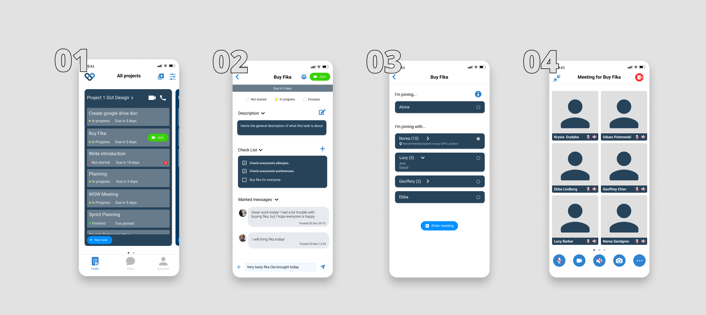
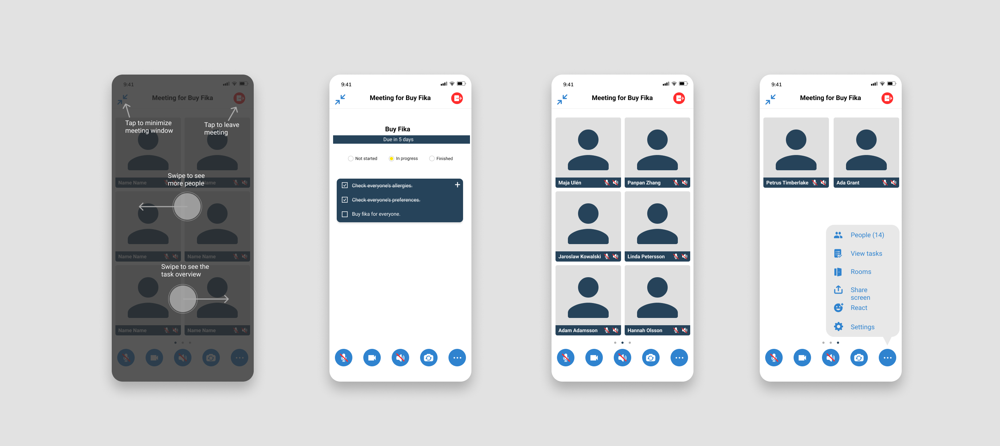

Overview
TaskCollab is an app for hybrid remote collaboration with a backlog feature. This was part of my Graphical Interface course where the task was to create a video conferencing app that supported hybrid meetings. There are a lot of problems when having hybrid meetings such as audio feedback or unsynchronized sound if people are connected with multiple devices in the meeting room. Continue reading to see how we solved the problem!
Time was spent on the ideation and wireframing to explore different user flows. The two areas that we focused on the most were how to join a hybrid meeting and how to reach and use the to-do list during meetings.
Join a hybrid meeting

Meeting

An explanatory overlay pops up when the user enters a meeting for the first time. 6 participants in the meeting are displayed on the screen, simply swipe for more people.
To access the task page the users have three options. There is a simplified task page in the meeting that can be accessed by either swiping to the first page of the meeting or using the more options menu. The third option is to minimize the meeting view to reveal the task page with all details. Standard video conferencing settings can be found at the bottom of the page.
We were a group of 5 people working on this project. When we went from wireframing to designing the hi-fi prototype, it became noticeable that we all had different styles when designing. Some preferred having larger text and bigger components, while others kept it smaller. People also had different ways of grouping items. Halfway through designing we had to create some sort of guidelines regarding the sizing and spacing of elements. Designing a coherent interface together with other people is something you'd do in real life, and I think this project taught me a lot about that!